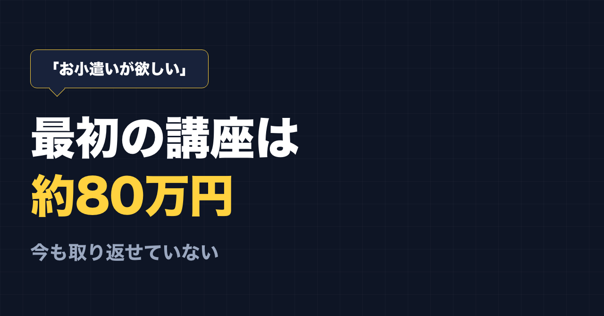
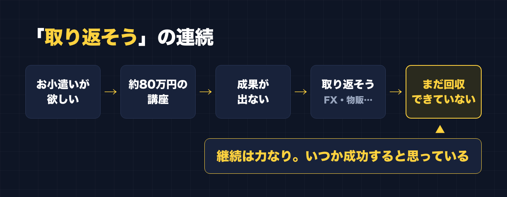

1. タイトルをコピーして、note のタイトル欄に貼る
2. 「本文1をコピー」から順にコピーし、note の本文に貼る
3. 青いラベルの位置に、images フォルダの同じ名前の画像を入れる（本文には貼られません）
※ 見出しが普通の文字になった場合は、その行を選んで「大見出し」を設定してください

「自分が遊ぶお小遣いが欲しい」
副業を始めたときの気持ちは、正直このくらいでした。
大きな目標があったわけではありません。少し自由に使えるお金があったらいいな、という軽い気持ちです。
その軽い気持ちで、最初に入った講座が、約80万円でした。
最初の講座は、約80万円
最初に入った講座は高額で、約80万円でした。
結果から書きます。全然、成果は出ませんでした。
「お小遣いが欲しい」で始めたのに、最初にお小遣いどころではない金額が出ていった。今振り返ると、スタートからちぐはぐでした。
「取り返そう」の連続
80万円を取り戻したくて、FX、物販と、次々に手を出しました。
そして、そこでも少しずつお金を払ってきました。
取り返すために始めたことに、またお金を払う。うまくいかないと、別のもので取り返そうとする。「取り返そう」の連続でした。
FX も物販も、私には合いませんでした。

少し売れたことはある。でも、取り返せてはいない
以前、「副業で13回失敗した僕が、14個目でやっと稼げた理由」という note を書きました。
あの「稼げた」は、アフィリエイトで少し売れたことです。売れたのは本当です。
でも、最初の80万円と、そのあとに払ってきたお金を取り戻せたかというと、取り戻せていません。自分で作ったツール「副業ドラフト」も、今のところ売上はゼロです。
だから私は、今の状態をこう言っています。
「今も成果が出ていないから、これは失敗でしかない」
きれいにまとめると「学びになった」と言えるのかもしれません。でも、払ったお金が戻っていない以上、私の中では失敗です。
それでも続けている理由
いろんな講座にお金を払ってきて、ひとつ分かったことがあります。
どの講座も、根本は同じでした。
- 続ける
- 売れている人を真似る
- 手を動かす
言われていることは、ほとんど変わらない。違うのは、自分がそれをやり続けたかどうかでした。
今の私の気持ちは、この一言です。
「継続は力なり。いつか成功すると思っている」
前は「取り返したい」でした。今は「続けていれば、いつか」です。
続け方も変えました。帰宅後に1〜2時間やると決めていたころは、疲れてできず、できない自分に落ち込みました。今は昼休みや休憩の合間の5分、10分で、やれるときにやっています。そうしてから気持ちが楽になり、続いています。
取り返そうとしている人へ
もし今、講座や投資で出ていったお金を「取り返そう」としている人がいたら、私がいま大事にしていることを2つだけ書いておきます。えらそうに言える立場ではないので、同じ途中にいる人間のメモとして読んでください。
死ぬこと以外は、やり直せる
仕事の研修で、私はよく「死ぬこと以外はやり直せる」と話しています。
お金がなくなるのは、つらいです。でも、やり直せます。
やり直せるなら、焦って次にお金を払わなくていい。「早く取り返さないと」と思ったときほど、一度手を止めていいと思っています。私は、焦って次々に払ったほうの人間です。
大きい目標を、小さく分ける
「80万円を取り返す」は、目標として大きすぎました。大きすぎると、一発で取り返せそうなものに目が向きます。
大きい目標があるなら、そのための小さい目標を決める。小さい目標のために、今日やる行動を決める。
たとえば、こんな分け方です（あくまで例です）。
- 大きい目標：副業で、払ったお金を少しずつでも回収したい
- 小さい目標（例）：まず、お金を払わずにできることを1つ続ける
- 行動（例）：休憩の5分で、学んだことを1つ投稿の下書きにする
もうひとつ。次に何かにお金を払う前に、「それで自分は毎日何をするのか」を行動の形で書けるかどうか、確かめてみてください。書けないなら、たぶんまだ払うときではありません。どの講座も根本は同じだった、というのが私の実感なので。
最後に
私は、仕事の研修でも失敗談をよく話します。ここに書いたことが、誰かの「次の払い込み」を一回止めるきっかけになれば、書いた意味があると思っています。
ここからは宣伝です。
公式LINEでは、「特典」と送っていただくと、LINE限定のプロンプト5本をお届けしています。
https://lin.ee/RzyA13P
「副業ドラフト」は、AI の質問に答えるだけで、副業に使える強みの棚卸しと Threads の下書きを作るツールです。Threads の下書き3本までは無料で使えます。
https://note-threadssf.onrender.com
Threads では、こうした試行錯誤を日々発信しています。
https://www.threads.com/@shachiku_mao
最後まで読んでいただき、ありがとうございました。